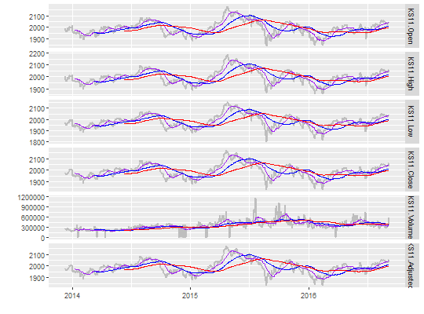

tmplot(xts, mv = c(20, 60, 120), plotly = F, ...)
xts objectfacet_grid()plotly If TRUE, plotly class ploting. else ggplot2 class ploting. Default value is FALSE
ts and (three lines) moving average plot for all fund items
library("quantmod") data <- getSymbols("^ks11", from = Sys.Date() - 1000, to = Sys.Date(), auto.assign = F) tmplot(data)Warning message: na.pad argument is deprecated Warning message: na.pad argument is deprecated Warning message: na.pad argument is deprecated Joining, by = c("Index", "variable") Joining, by = c("Index", "variable") Joining, by = c("Index", "variable") Warning message: Removed 19 rows containing missing values (geom_path). Warning message: Removed 59 rows containing missing values (geom_path). Warning message: Removed 119 rows containing missing values (geom_path).